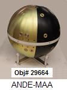
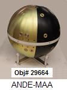
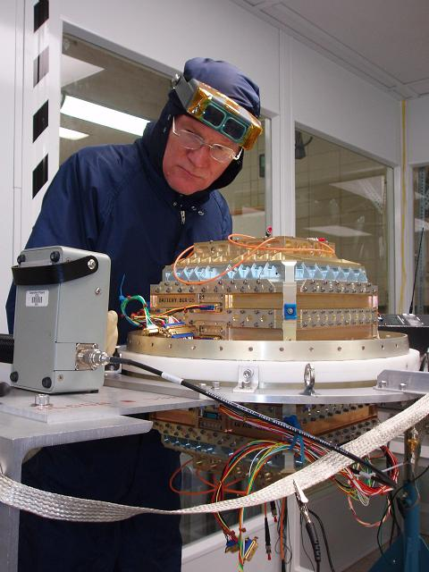
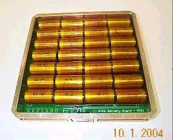
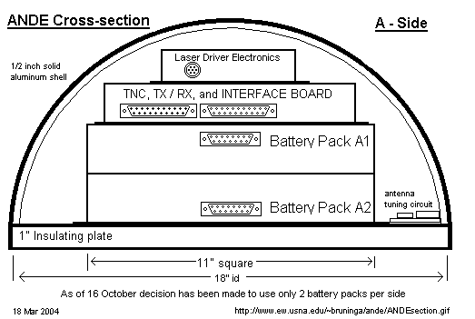

ANDE (MAA) - Amateur Radio Transponder

ANDE (MAA) - Amateur Radio Transponder

US Naval Academy Satellite Lab
Bob Bruninga, WB4APR
Present Team: Midn's Aaron(04), Villalbi(04), and Weisenberg(04)
Midn's Kelley(03), Keller(03), Harris(03), Patterson(02), & Ensign Sillman(02)
Antenna Designers/Modelers: Bob WB4APR, Phil KF8JW, Bobby WB8FEW, Bob KC8QPM & Rick K8CAV
Deliverd to KSC 12 July 2006. Launched in December...
See the ANDE-Operations Page
for operations to begin the first week of Dec 2006
See the Documentation Page
for details on the spacecraft design.
VOLUNTEER GROUND STATIONS: Since ANDE has no onboard computer for whole-orbit
telemetry capture we are dependent on volunteer ham radio ground stations
(see typical photo - AA6RR) and
(EA8BQD in the Canaries)
for telemetry feeds to the APRS Internet system
for live distribution. Requirements are simple:
1200 baud AX.25 TNC connected to radio tuned to 145.825
Omni VHF Antenna (typically a 19" vertical whip) or optional tracking beam
APRS or ALOGGER software serving as an IGate connected to Phil's satgate.aprsca.net port 20150
SETTING UP A SATGATE: You can use any APRS program to feed satellite
data to the APRS-Internet system (APRS-IS) in the normal manner like any IGate.
But if you dont
want to mess with all the APRS system, you can build a simple SatGate using only
the ALOGGER program. See building an ALOGGER Satgate.
See the status of other SATgates.
Click to (
download) Alogger
STATUS: The Flight unit is at KSC awaiting launch on STS-116 planned for the
first week of Dec 2006. It was delivered to the Cape the week of 11 July for
integration starting on the 17th.
The USNA comm systems for ANDE were complete and integrated in the spacecraft
and tested as of 15 August 2005.
This is after a significant set-back 27 May 05, when the finished Comms
modules as pictured above were burned to a crisp the night before delivery
by a failed 60C heat-chamber thermostat.
See photo. On 29 May we began ordering parts and
completely re-built it and delivered the second complete system by 13 July 05.
As shown below, the final tuning
of the spacecraft as an antenna occured on 15 Aug 05 and got an amazingly good 1.2:1 SWR!


Antenna Matching PI Circuit
SWR Testing
ANDE stands for Atmospheric Neutral Drag Experiment and
is a 19" passive sphere with optical corner reflectors and 6 Lasers for precise orbit
determination. The Naval Academy has been given the opportunity to construct a
digital communications transponder for use in the Amateur Satellite Service to fit
inside the ANDE sphere similar to what it is flying on the
PCsat
and PCSAT2 missions. The PCsat-like follow-on packet communications
mission will continue the interest of students worldwide by letting them
communicate via the satellite transponder and to watch its subsequent decay in the space environment due to drag. See the paper on Licensing of ANDE
for operations in the Amateur Satellite Service
COMMUNICATIONS DESIGN DETAILS: This web page addresses only the communications portion
of the design which is our responsibility. We maintain this web page daily as the design
and development proceeds. The communications, telemetry, command
and control is all based on the off-the-shelf Kantronics KPC-3 TNC as shown below. What
makes this design unique is the absence of any external antennas as required by the
minimum drag needs of the science experiment. We solved this by cutting the sphere in
half so that we can use it as a dipole antenna across the two halves.

Lithium Primary Battery Power System: Another unique requirement of the comm
system was to operate for up to 1.5 years on primary batteries without any solar cells
or external charging. Thus, ANDE runs on 112 "D" cell Lithium thionylchloride cells
arranged in 4 packs of 7 strings of 4 cells in series. To meet the man safety requirements
for launch on the shuttle, extensive testing has been conducted.


See Higher resolution of Batteries in box
And Higher resolution Battery Box on disk
Battery Box:
Cell Arrangement,
Schematic.
Battery Life Management
uses 3 battery packs separately to exhaustion for lasers to yield measurable life data.
Present design yields 1.5 year Power Budget using the
Tadrian TL-5930 Cell.
COMMUNICATIONS SYSTEM:
The communications system consists of a Kantronics KPC-3+ TNC, a Hamtronics
transmitter and receiver and a custom interface board to hook it all together.
These are all mounted in a 1" tall box on top of the battery boxes.
Communications Tray Layout,
Interface Board PCB Design, and
Parts Locations.
Comm system Schematic
Using the KPC-3+ for Teemetry TNC Mods.
TelemetrySensors,
Schematic, and
Conditioning Circuits.
Example Speech,
Text-to-Speech Schematic....
with the supportingText description
and a
link to the MFR's documentation.
Antenna Matching Circuit.
Debugging problems
TNC ROM defaults.

Background notes and supporting justification used in the design:
Terminal Node Controller (photo)
VHF 3 Watt Transmitter (photo)
VHF receiver (photo) (pots are removed for flight model).
ANDE Frequency Selection (2m downlink) and the actual
IARU Frequency Request
ANDE User Expectations
Link Budget
Click here to download EXPRESSPCB.pcb file.
Use the free ExpressPCB software to view it.
Telemetry Multiplexer ,
RunTime Counter, and
Interface Board changes required .
Telemetry format and equations .
Other Documents and drawings:
Prelimiinary Antenna testing connections.
Two man lift system.
GSE Test Equipment and Test Plan.
MULTI-PACK BATTTERY DESIGN: Since the
lithium discharge profile
is totally flat to 97% of battery life, the only energy usage data will be obtained
by using each of the 4 battery packs to exhaustion. This will give 4
energy benchmarks during the mission. The battery packs are all in parallel, but 1, 2 and 3 series droping diodes (0.7v) are placed in series with each additional pack beyond the first. This way, the first pack is used to ehaustion before significant current begins drawing from the next, and so on.
The photo below is NOT ANDE, but
it does give a representative view of a 19" spherical Spacecraft.
In the spring semester 2002, Midn Patterson (EE Dept) in conjunction with the
USNA Small Satellite program under the guidance of LTCL Billy Smith
and Satellite Lab Engineer, Bob Bruninga, WB4APR did initial investigations into conformal
antennas for such low-drag spherical spacecraft. These showed that the natural resonance
of the 17" sphere was near to the amateur satellite band on 146 MHz and if this frequency
was used, that the sphere could be used as the antenna itself with no external protrusions.
The FIRST SEMESTER objectives below were accomplished in the Spring of 2002.
Click here to see the SWR resonance achieved at 145 MHz.
The ANDE Communications
mission, can provide basic Telemetry Command and Control for ANDE in addition
to supporting general communications in the Amateur Satellite Service. This includes:
Battery and Suns sensor voltages (attitude)
Battery currents
Module Temperatures
ON/OFF command switches
1200 or 9600 baud RS-232 serial data telemetry channel for other Amateur Payloads
Digital Communications Relay support
of the PCsat/APRS mission.
A text-to-speech experiment for downlink communications to mobile and
handheld users without digital packet capability.
The digital communications relay will operate
within the ITU regulations for operations in the Amateur Satellite Service,
to provide digital communications for amateur satellite operators, educators
and possible remote student amateur radio environmental sensors
worldwide. This mission will augment the communications
mission of PCsat by adding a second and third satellite to the
constellation for comms support of remote travelers, cross country travelers,
expeditions, or any other travelers far from any existing
APRS terrestrial communications infrastructure.
The PCsat and ANDE downlink from such users is fed into the existing
worldwide internet linked APRS system by a few permanent volunteer ground stations. ANDE would
join ISS, MIR, PCsat and several other on-orbit amateur radio packet experiments
(ASTARS)
that have been conducted over the years leading up to this exciting capability.
The TNC COMM SYSTEM (this is the KPC-9612. The KPC-3 is slightly smaller).
Here are several additional PHOTOS, DRAWINGS and Documents reorganized by topic:
The Prototype
Preliminary Internal Structure Sketch
TNC mods for telemetry
The Space segment of the ANDE communications mission has been demonstrated a
number of times in space via PCsat,
MIR School tests, the Shuttle SAREX,
and the SPRE mission. . It is also a spin off of a previous
launch opportunity that we had in 1998 called NATSweb that
almost got launched on SEA-LAUNCH..
The ANDE Communications mission is a project to produce a viable payload
in a very short time frame using off
the shelf components where possible. Here are the background topics of design:
The Mission and ANDE Team
APRS is the Automatic Packet Reporting System that amateur radio operators use for
communictions and position tracking using the
APRS
Automatic Packet Reporting System . The ANDE Communications transponder would be
operated under the rules of the Amateur Satellite Service and the rules of the FCC.
You are visitor:
 since 1 October 2002.
[try using Netscape if the counter does not show]
since 1 October 2002.
[try using Netscape if the counter does not show]
Send comments, suggestions, feedback to bruninga@usna.edu
Obsolete ideas:
The original COMM plan
Original Comms proposal
Suggested Morse Code sequence for Lasers.
Original A/B Battery/Shell Harness
and A/B Cross Connect harness.
Temprorary Sketch of possible sep system
Look at this idea for mounting the Laser Driver on the shell.
Sep Switch locations
Space Test Program Payload Requirements Document
A commercial
wideband spherical antenna design. Probably not applicable to our needs.
Drawing template
.
{kind=link}
{kind=link}
{kind=link}
{kind=link}
{kind=link}
{kind=link}
{kind=link}
{kind=link}
{kind=link}
{kind=link}
{kind=link}
{kind=link}
{kind=link}
{kind=link}
{kind=link}
{kind=link}
{kind=link}
{kind=link}
{kind=link}
{kind=link}
{kind=link}
{kind=link}
{kind=link}
{kind=link}
{kind=link}
{kind=link}
{kind=link}
{kind=link}
{kind=link}
{kind=link}
{kind=link}
{kind=link}
{kind=link}
{kind=link}
{kind=link}
{kind=link}
{kind=link}